Wayfinding signage for parks
Designed and implemented comprehensive biodiversity park signs across the borough, including maps and informational displays. Collaborated with a specialist company, 4Site, to produce eco-friendly, durable signage. Project involved map illustration, content writing and original photography, enhancing visitor experience and ecological awareness.
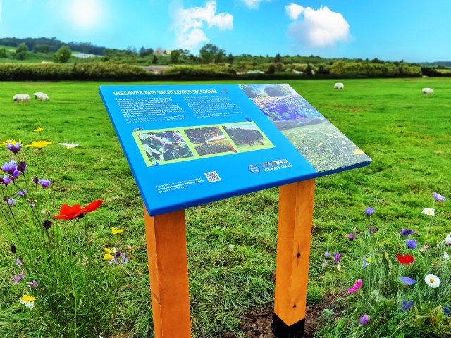
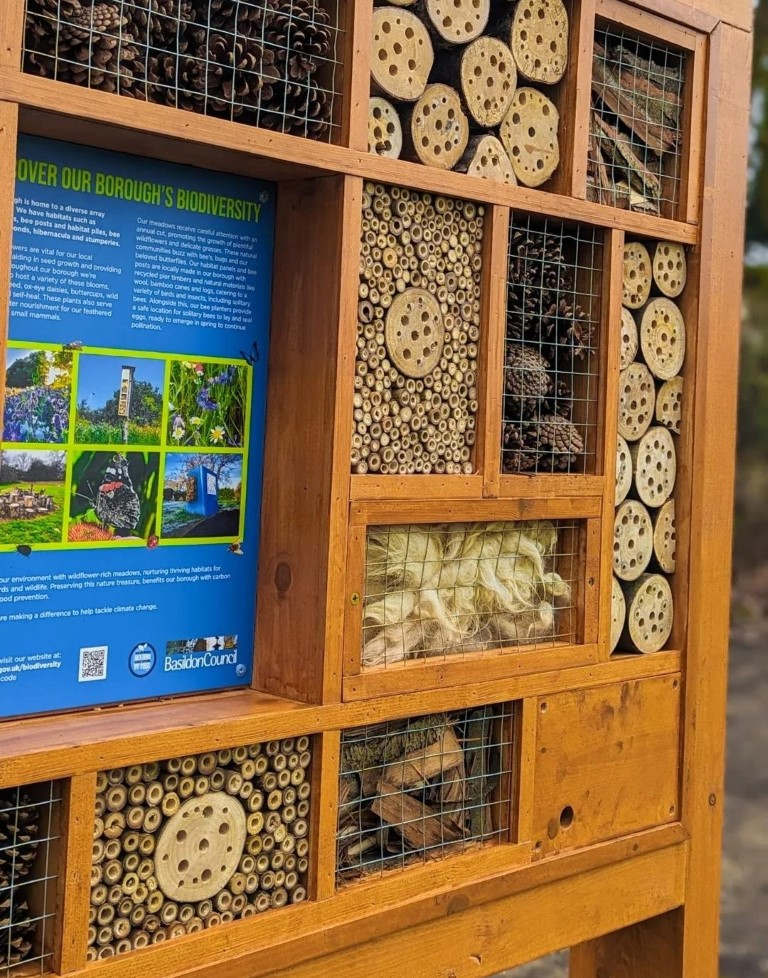
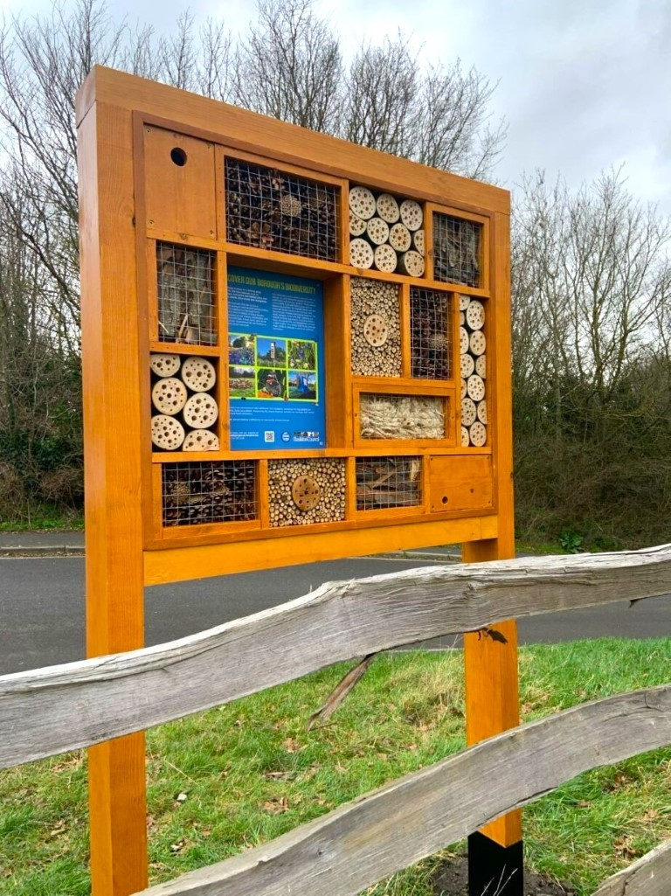
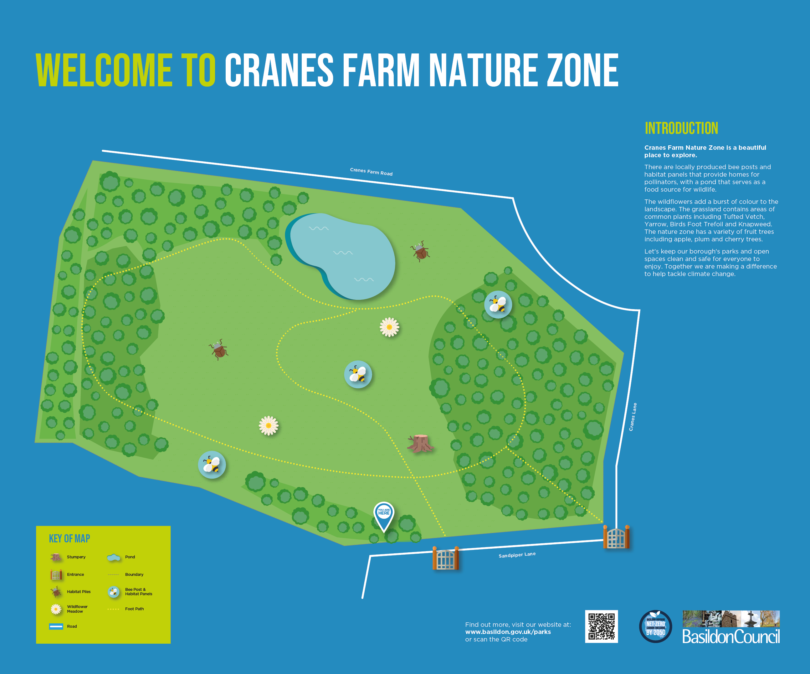
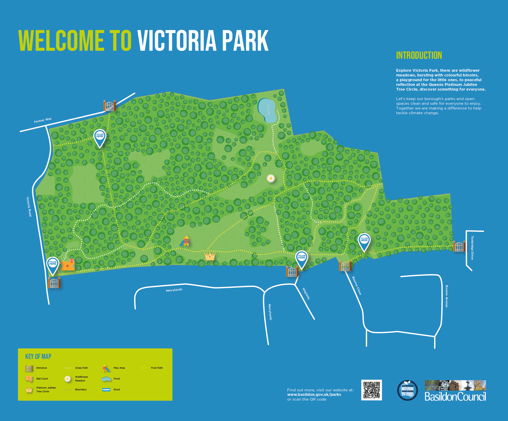
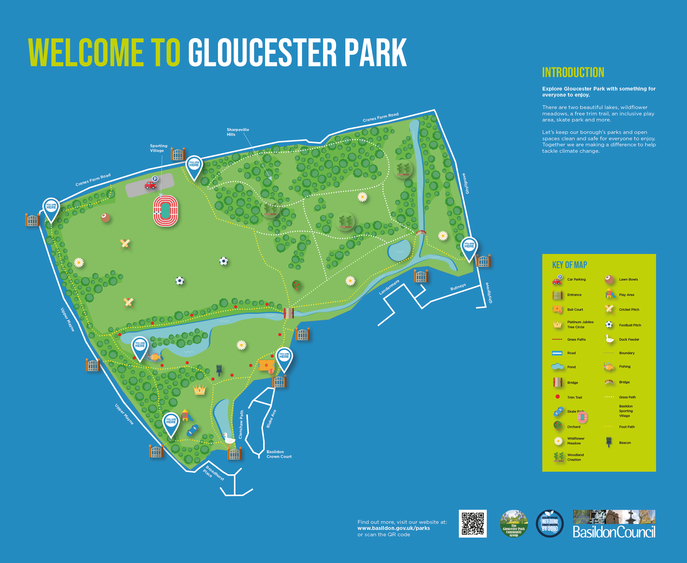
 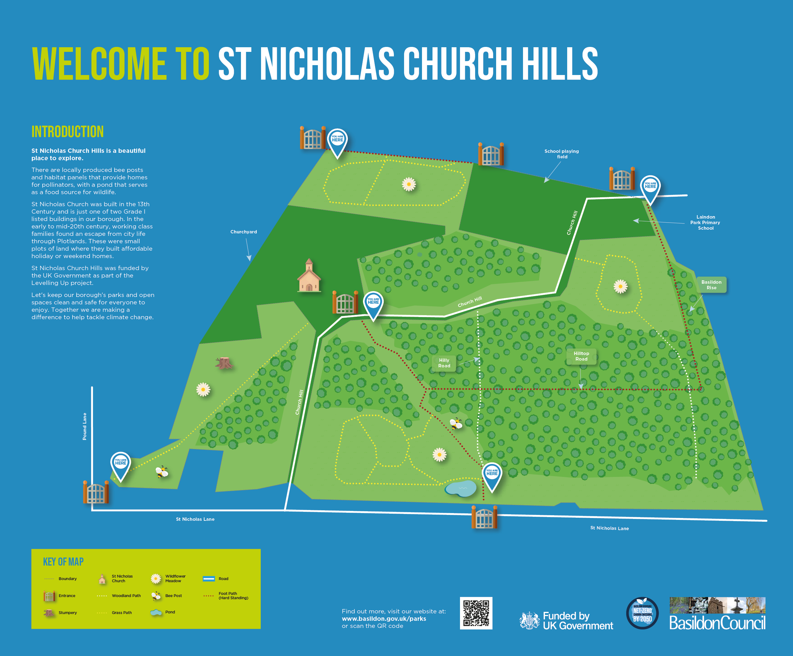
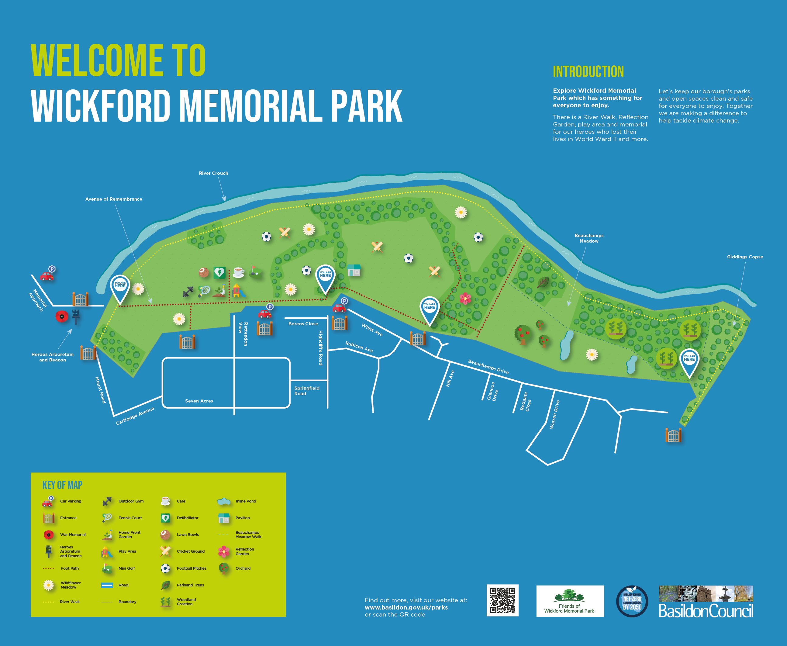
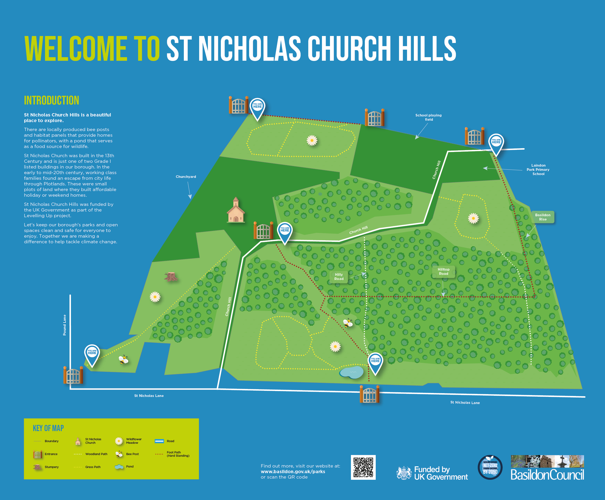
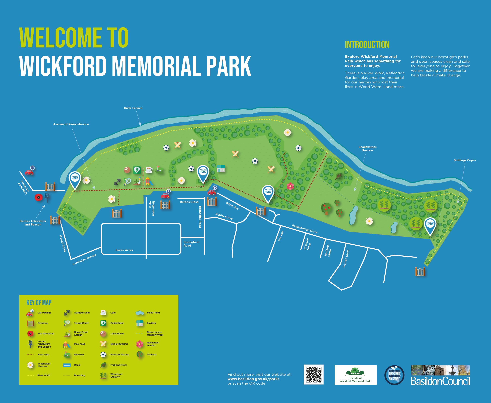
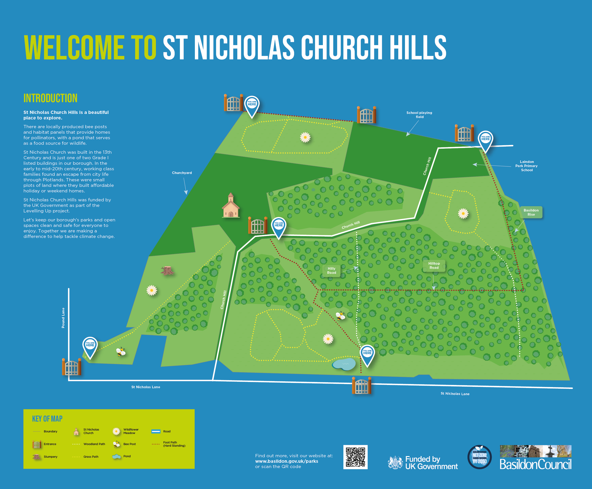
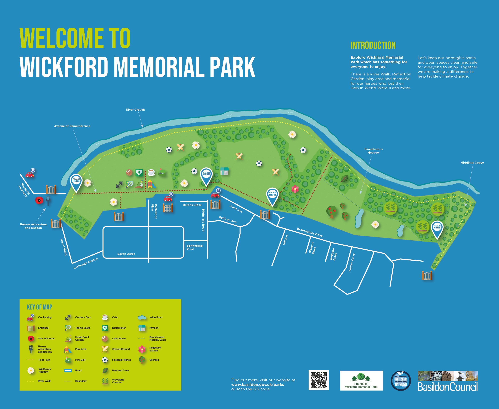